Co kde stálo
Poloha všech domů pochází z GIS vrstvy projektu, která je vektorizací historického plánu města Mostu z roku 1938. Ulice U náhonu (K jatkám) v ní má 15 budov a navazující Na popravišti 11; 19 z nich nese číslo popisné. Na západní straně U náhonu leží nároží Rybalkovy (281) a ulice B. Jablonského (988 a 1818), východní stranu zabírá areál městských jatek. Na jižním konci ulice ústí do Na popravišti, jejíž jihovýchodní řada od nárožního domu 606 končí krajním domem 1068 u volného plácku směrem k Pražské ulici. Kliknutím na dům v mapě otevřete jeho stránku.
Mapa ukazuje půdorysy GIS. Model se od nich tam, kde to prameny dokládají, odchyluje: dvojice 988 a 987 má šířky 11,40 a 12,05 m místo 12,38 a 11,07 m (součet řady podle GIS je zachován), domy 541, 1065 a 1068 mají šířky z kótovaných plánů 12,80, 9,00 a 9,00 m místo 12,15, 10,06 a 8,44 m, stáje 286 jsou blokem 10,30 m podle plánu 1928, kde GIS kreslí jen pás 4,56 m, a dům 281 nemá nárožní pás 3,1 m, který je podle karty terasou nad garážemi. Domek 1886 v GIS chybí a je zakreslen podle náčrtu (viz Rozpory).
Úseky ulice
- Z · západní strana U náhonu (od Rybalkovy k Na popravišti): 281, 286, 987, 988, 1818, 431
- NP · Na popravišti, jihovýchodní řada (od nároží 606 k plácku u Pražské): 606, 1886, 719, 541, 1065, 1068
Databázové oblasti a co modelováno není
Oblast U náhonu se v databázi Libuše během práce dvakrát přeorganizovala: snapshot z 11. 9. 2026 měl 20 struktur (a duplicitní oblast „U Nahonu“ s kolorovanými odvozeninami), živé načtení 23. 10. 2026 dvanáct a 9. 11. 2026 jen sedm (556, 566, 838, 987, 988, 1697, 1886); oblast Na popravišti má osm struktur. Obě oblasti mají dohromady 15 struktur. Domy 281 (dnes oblast Rybalkova), 286 a 431 (Leninova) a 1818 (Jablonského) jsme načetli z jejich nových oblastí, stejně jako sousední domy jmenované na kartách; všech 554 příloh 29 struktur jsme otevřeli. Domy, které byly zbořeny před pořízením dostupných snímků, jsou předány jako blocked:
| Čp. | Proč není modelován | Přílohy v databázi |
|---|---|---|
| 455 | nárožní domek Na popravišti × U náhonu (GIS 1611); zbořen před pořízením dostupných snímků: na fotografiích ze 70. let je na jeho místě proluka; GIS (plán 1938) budovu ještě vede; jediný plán 455_01 kreslí přístavbu (projektová hypotéza je otázka pro uživatele) | 5 |
| 597 | dům Na popravišti (GIS 1612); zbořen před pořízením dostupných snímků: na fotografiích ze 70. let je na jeho místě proluka; GIS (plán 1938) budovu ještě vede; plán 597_01 je jen dvorní chlév | 6 |
| 697 | dům Na popravišti (GIS 1613); zbořen před pořízením dostupných snímků: na fotografiích ze 70. let je na jeho místě proluka; GIS (plán 1938) budovu ještě vede; plán chybí | 5 |
| 838 | budova správy jatek (GIS 1298); v náčrtu areálu přeškrtnutá, bez snímku | 11 |
Struktury oblasti U náhonu, které modelované nejsou (v sestavě šedé bloky):
| Čp. | Poznámka | Ulice podle GIS | Přílohy |
|---|---|---|---|
| 556 | Všech 16 příloh ukazuje dům čp. 556 v Tyršově ulici; GIS budova 1299 se štítkem 556 v areálu jatek nemá pramen (možná záměna s halou 566) – v sestavě šedý blok | Tyršova (1938 Jahnova), U náhonu (1938 K jatkám) | 16 |
| 566 | hala jatek: jediný šikmý snímek bez měřítka a náčrt areálu; strana a délka nejisté – v sestavě šedý blok | v GIS není | 12 |
| 1697 | bývalá prádelna jatek: jediný snímek, pravděpodobně dvorní strana – v sestavě šedý blok | U náhonu (1938 K jatkám) | 3 |
Jako šedé bloky zůstávají i dům 550, jehož hlavní průčelí patří Leninově ulici, a budova GIS se štítkem 230: pod číslem 230 vede Libuše dům ve Starém městě (oblast Hvězdná), pro budovu u jatek pramen nemá.
Odkud jsou prameny
Fotografie ze 70. let
Fasády všech modelovaných domů kromě domku 1886 jsou ze snímků ze 70. let: série ATO119 (řadový snímek 988 a 987 od jihovýchodu, čelní a nárožní záběry, dvorní strany z balkonu sousedního domu) a fotografie s kartami Krajského střediska státní památkové péče a ochrany přírody (KSPPOP), které popisují stanoviště a sousedy. Každý použitý snímek je na stránce domu s červeným rámečkem a ID otvorů. Cílová epocha modelu jsou 70. léta, proto je dům 431 ruinou bez střechy, jak ho ukazuje fotografie, a ne domem podle projektu 1922.
Stavební plány 1885–1941
Kótované plány dávají šířky, výšky a sklony: nárožní dům 281 (červen 1885, „an Stelle des alten“), dům 719 (1885, přestavba 1928), domy 1065 (říjen 1899, Franz Weitzdorfer) a 1068 (prosinec 1899, C. Hinke), dům 431 (1922, Josef Richter), přestavba stájí 286 (říjen 1928, A. Meixner), dům 541 (kolem 1927, řez 1930) a zaměření domu 606 z roku 1941. Projekt není realizace: neobarokní výzdoba 1068, bosáž 719 a dvojice oken 606 z projektů na fotografiích nejsou a model je nemá.
Náčrty KSPPOP
Ručně kreslené situační a střešní náčrty ze 70. let určují členění střech, polohu komínů a domy v hloubce bloku; podle náčrtu 606/5 je zakreslen domek 1886, který GIS nezná.
Chybně zařazené a cizí listy
Listy cp_541_04 a cp_541_05 jsou plány domu 719 (1924). Plány 431 z let 1874–1883 nesou prázdné číslo a jiné rozměry a nebyly použity. Plán dvora 1818 z roku 1933 nese omylem „Nr. 1816“. Všech šestnáct příloh čp. 556 ukazuje dům v Tyršově ulici, ne budovu u jatek.
Databáze Libuše projektu MOST
Databáze byla použita pouze pro čtení (0 zápisů). Seznam oblastí a přílohy jsme načetli živě 23. 10. a znovu 9. 11. 2026, protože se oblast U náhonu mezitím přeorganizovala. Celkem 554 příloh 29 struktur (oblasti U náhonu a Na popravišti, nové oblasti přesunutých domů Rybalkova, Leninova, Jablonského a Hvězdná a sousední domy jmenované na kartách) jsme otevřeli na kontaktních listech; karty a plány jsme četli v plné velikosti. Oblasti U náhonu a Na popravišti mají 15 struktur a 208 příloh (167 jedinečných).
Odvozeniny
Kolorované snímky a výřezy v databázi jsou rekonstrukce, ne prameny. O tvaru, otvorech a nápisech rozhoduje původní černobílá fotografie nebo plán.
GIS a terén
Polohy a natočení domů jsou z GIS vrstvy (vektorizace plánu 1938, místní souřadnice). Šířky se od GIS liší tam, kde je dokládá plán nebo poměr na snímku (viz mapa). Výšky budov v GIS jsou jen zástupný údaj: výšky jsou z řezů a pohledů plánů (281, 286, 541, 606, 1065, 1068), z poměrů na snímcích (987, 988, 1818, 431) nebo odvozené z profilu projektu (719). Terén je plochý (z = 0 u všech domů); historický výškopis nebyl k dispozici.
Jak vznikla geometrie
- Rešerše plánů. Nejdříve jsme prohledali databázi: všech 554 příloh 29 struktur jsme otevřeli na kontaktních listech, karty a plány jsme četli v plné velikosti (titulek, datum, měřítko, stavebník, sousedé). Protože se oblast U náhonu během práce přeorganizovala, hledali jsme přílohy každého čísla popisného ve všech oblastech, kde ho databáze vede.
- Identita domů. Pořadí domů na řadových snímcích, popisy stanovišť na kartách a šířky z GIS a z plánů určují, který dům je který: dvě levé osy snímku cp_987_001 patří domu 988, dům 281 má hlavní průčelí do Rybalkovy a k U náhonu jen slepý štít, budova 286 v U náhonu jsou dvorní stáje domu z Leninovy a dům 431 byl v 70. letech ruinou.
- Fasáda jen z fotografie nebo plánu s domem v rámečku. Na každém použitém snímku je dům v červeném rámečku a každý otvor má ID (G okna přízemí, M a U okna pater, D dveře, P průjezd, R a B zadní a dvorní strana). Počty otvorů z rámečků kontroluje brána proti plánu modelu; otvory, které pramen neukazuje, jsou přiznané hypotézy.
- Měřítko. Šířky jsou z kótovaných plánů (541, 1065, 1068, 286, 281), ze situace 1928 a poměru šířek na řadovém snímku (988 a 987) nebo z GIS. U fotografií jsme fasády rektifikovali na známou šířku; výšky jsou z řezů plánů nebo z poměrů na snímcích. Kde se projekt liší od fotografie, model sleduje fotografii.
- Střecha. Členění střech je z náčrtů KSPPOP, plánů a snímků, sklony z řezů; střecha hotového modelu se změří ze sítě. Zvláštní tvary: pultová střecha stájí 286 napříč ulicí za stupňovitou atikou, téměř plochá pultová střecha 541, složená střecha 1818 a ruina 431 bez střechy.
- Stavba v Blenderu. Parametrický builder bez okna (
build_house_un2.py, kopie builderu ulice U Pražské brány s doplňky pro pultové střechy) vyrobí zgeometry_plan.jsonBLEND a GLB; ruinu 431 staví vlastní skript. Otvory jsou skutečné niky, materiály jsou jen ID pro pozdější textury. - Kontrola. Brána geometrie (prosvítání podkroví paprsky, nekryté zdivo, střecha nad prázdnem, UV, síť, počty otvorů) a vizuální kontrola: pohledy s materiály a bez barev (čtyři strany, čtyři rohy shora, dva podhledy u okapu, shora), detaily otvorů a záznam kontroly. Opravy po kontrole dostávají novou revizi (988 r4, 286 r5, 541 r3), starší revize zůstávají uložené. Dům se do ulice umístí až po prošlé bráně a prohlédnuté sadě; u ruiny 431 je nekrytá koruna zdí doloženou výjimkou.
- Sestava ulice. Registr
street_layout_gis.jsondrží polohu, natočení a revizi každého domu (rámec X = východ, Y = sever); okolní budovy z GIS zastupují v sestavě šedé bloky, silnice a chodníky mají šířky jako hypotézu.
Pracovní složka: F:\MOST\output\u_nahonu_street_claude_2026-10-23\ (domy, kontroly, registr poloh; prameny jen ke čtení; stav 9. 11. 2026).
Domy ulice
Domy jsou seřazené po úsecích: západní strana U náhonu od Rybalkovy k jihu, pak řada Na popravišti od nároží 606 k plácku u Pražské. U domů se štítkem je podoba celá nebo zčásti hypotézou, nebo model ukazuje stav jedné epochy (ruina 431); štítek je stejný na stránce domu, v tabulce, v anglické verzi i v okně 3D prohlížeče.
Z · západní strana U náhonu (od Rybalkovy k Na popravišti)
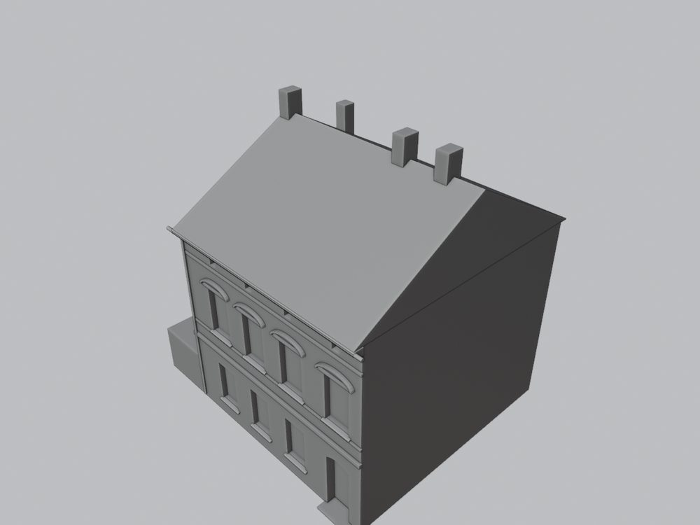
nárožní dům do Rybalkovy (plán 1885)
21 příloh v databázi · revize r1
zatím bez textur
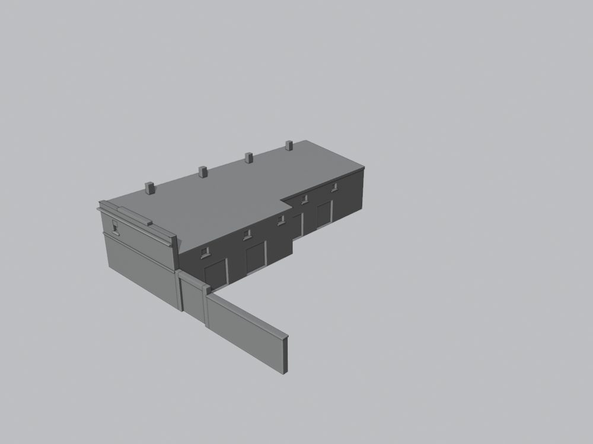
Uliční blok podle plánu 1928 a snímků ze 70. let; dvorní strana a otvory přízemí jsou hypotéza, šířka podle plánu (GIS má jen 4,56 m).
dvorní budova (stáje 1928) domu 286 Leninova
44 příloh v databázi · revize r5
bez textur (Částečně hypotéza – jen prosté materiály)
třípodlažní nájemní dům (4 osy)
25 příloh v databázi · revize r2
zatím bez textur
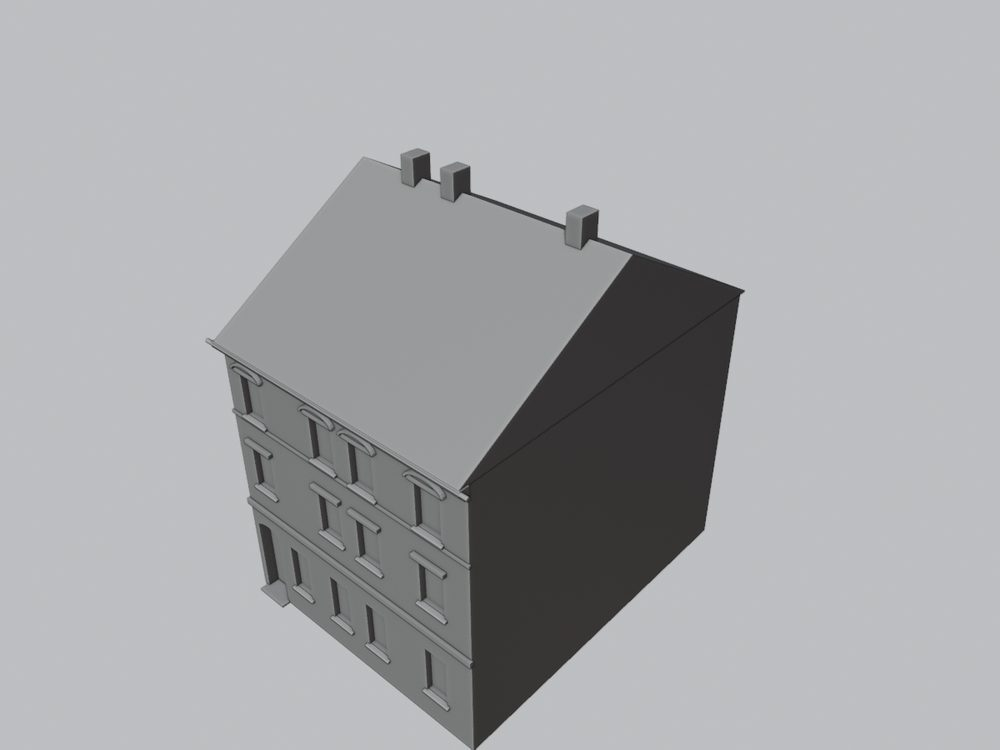
třípodlažní nájemní dům u nároží Jablonského
22 příloh v databázi · revize r4
zatím bez textur
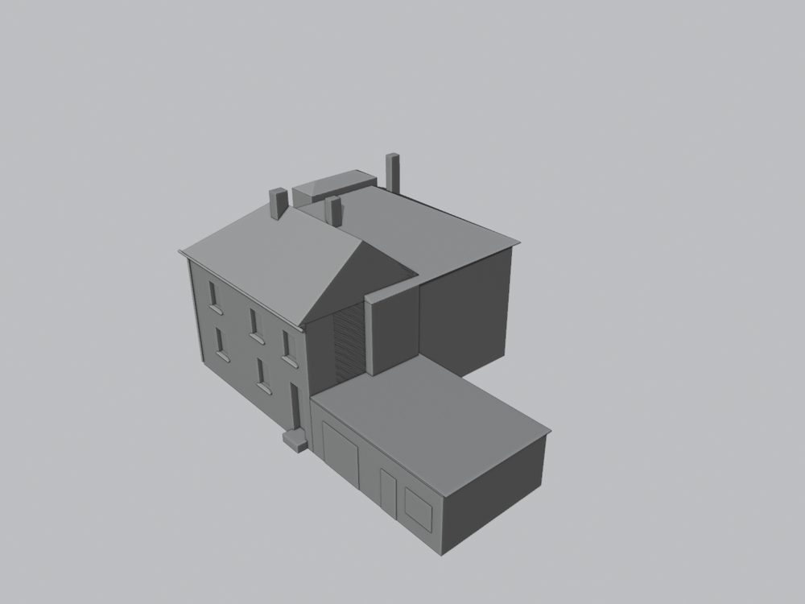
Dům podle snímků ze 70. let; výšky, tvar zadní střechy, jižní vikýř a severní přístavek garáží jsou odhad.
dvoupodlažní dům na nároží Jablonského se složenou střechou
14 příloh v databázi · revize r1
bez textur (Částečně hypotéza – jen prosté materiály)
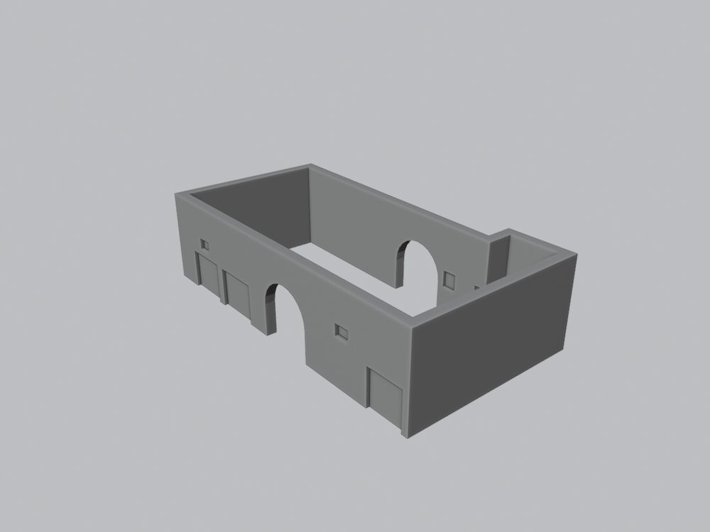
Model ukazuje stav na jediném snímku ze 70. let: obvodové zdi bez střechy s průjezdem a garážovými vraty. Dům se střechou a podkrovím podle plánu 1922 není modelován.
ruina domu jako vjezd do garážového dvora (stav 70. let)
17 příloh v databázi · revize r1
bez textur (Ruina (stav 70. let) – jen prosté materiály)
NP · Na popravišti, jihovýchodní řada (od nároží 606 k plácku u Pražské)
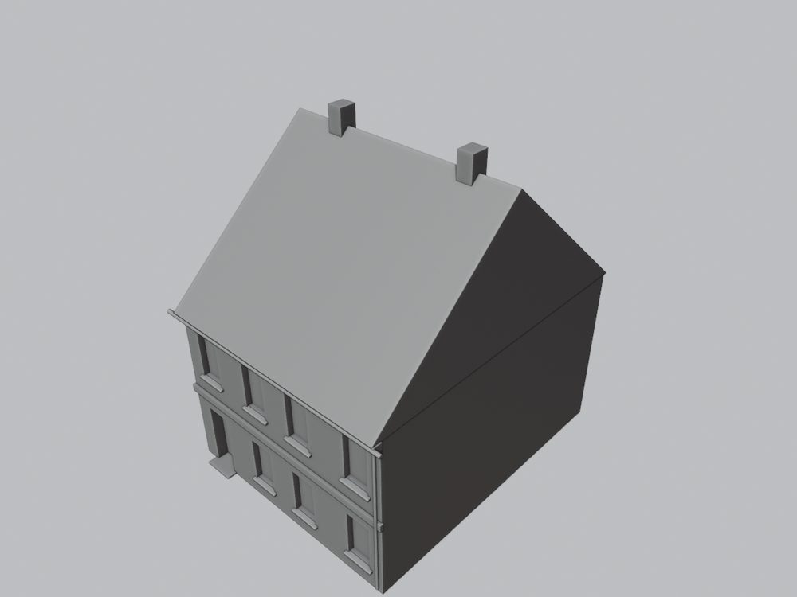
nárožní dům Na popravišti × U náhonu
20 příloh v databázi · revize r1
zatím bez textur
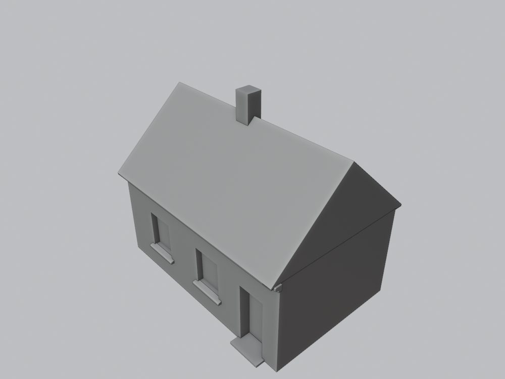
Domek bez GIS půdorysu: poloha a velikost z náčrtu, podoba odhad podle jediného zarostlého snímku.
přízemní domek v hloubce bloku (hypotéza)
3 příloh v databázi · revize r1
bez textur (Hypotéza – jen prosté materiály)
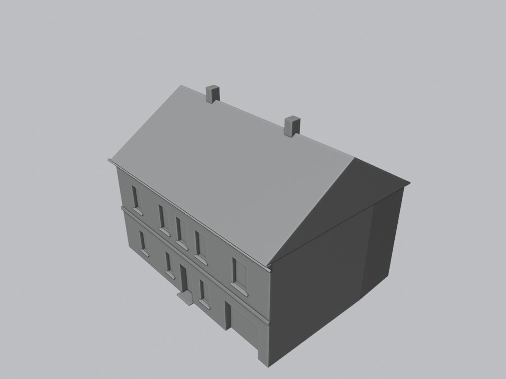
dvoupodlažní dům s průjezdem (přestavba 1928)
29 příloh v databázi · revize r1
zatím bez textur
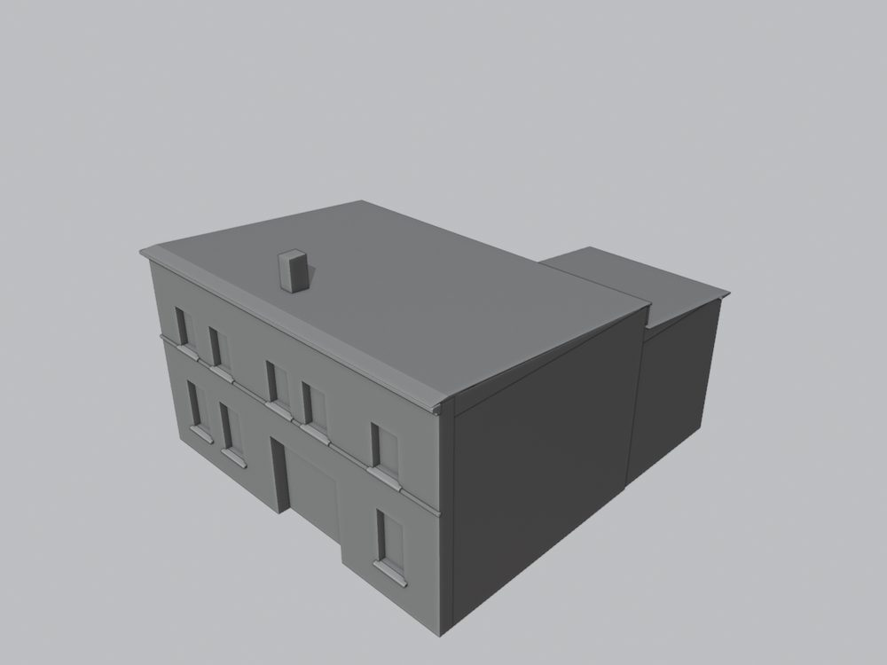
dvoupodlažní dům s průjezdem a téměř plochou střechou
18 příloh v databázi · revize r3
zatím bez textur
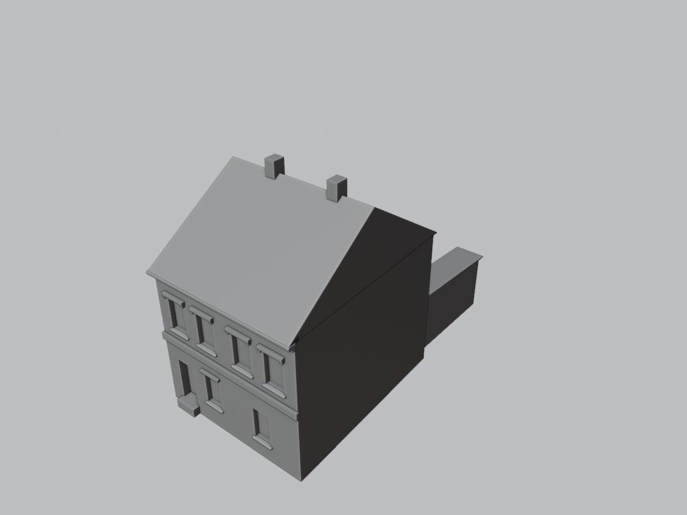
dvoupodlažní dům se supraportami (1899)
23 příloh v databázi · revize r1
zatím bez textur
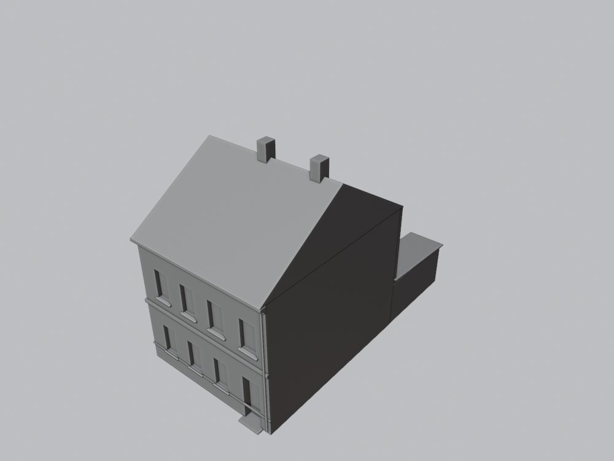
krajní dům řady s holým štítem
10 příloh v databázi · revize r1
zatím bez textur
Souhrnná tabulka
| Čp. | Úsek | Typ | Podlaží | Průčelí × okap (m) | GIS budova (popisek) | Přílohy | Revize | Stav |
|---|---|---|---|---|---|---|---|---|
| 281 | Z | nárožní dům do Rybalkovy (plán 1885) | 2 + podkroví | 10,9 × 9,7 | 372 (281) | 21 | r1 | ve 3D |
| 286 | Z | dvorní budova (stáje 1928) domu 286 Leninova Částečně hypotéza Uliční blok podle plánu 1928 a snímků ze 70. let; dvorní strana a otvory přízemí jsou hypotéza, šířka podle plánu (GIS má jen 4,56 m). | 2 | 10,3 × 4,7 | 1617 (286) | 44 | r5 | ve 3D |
| 987 | Z | třípodlažní nájemní dům (4 osy) | 3 | 12,1 × 11,3 | 388 (987) | 25 | r2 | ve 3D |
| 988 | Z | třípodlažní nájemní dům u nároží Jablonského | 3 | 11,4 × 11,3 | 387 (988) | 22 | r4 | ve 3D |
| 1818 | Z | dvoupodlažní dům na nároží Jablonského se složenou střechou Částečně hypotéza Dům podle snímků ze 70. let; výšky, tvar zadní střechy, jižní vikýř a severní přístavek garáží jsou odhad. | 2 | 10,7 × 7,3 | 1616 (1818) | 14 | r1 | ve 3D |
| 431 | Z | ruina domu jako vjezd do garážového dvora (stav 70. let) Ruina (stav 70. let) Model ukazuje stav na jediném snímku ze 70. let: obvodové zdi bez střechy s průjezdem a garážovými vraty. Dům se střechou a podkrovím podle plánu 1922 není modelován. | 1 (ruina) | 16,5 × 4,4 | 1614 (431) | 17 | r1 | ve 3D |
| 606 | NP | nárožní dům Na popravišti × U náhonu | 2 | 9,7 × 6,9 | 1626 (606) | 20 | r1 | ve 3D |
| 1886 | NP | přízemní domek v hloubce bloku (hypotéza) Hypotéza Domek bez GIS půdorysu: poloha a velikost z náčrtu, podoba odhad podle jediného zarostlého snímku. | 1 | 7,1 × 3,2 | None (bez čp.) | 3 | r1 | ve 3D |
| 719 | NP | dvoupodlažní dům s průjezdem (přestavba 1928) | 2 | 15,8 × 7,8 | 1625 (719) | 29 | r1 | ve 3D |
| 541 | NP | dvoupodlažní dům s průjezdem a téměř plochou střechou | 2 | 12,8 × 7,2 | 1624 (541) | 18 | r3 | ve 3D |
| 1065 | NP | dvoupodlažní dům se supraportami (1899) | 2 | 9,0 × 8,2 | 1623 (1065) | 23 | r1 | ve 3D |
| 1068 | NP | krajní dům řady s holým štítem | 2 | 9,0 × 8,3 | 1622 (1068) | 10 | r1 | ve 3D |
| 455 | – | nárožní domek Na popravišti × U náhonu (GIS 1611); zbořen před pořízením dostupných snímků: na fotografiích ze 70. let je na jeho místě proluka; GIS (plán 1938) budovu ještě vede; jediný plán 455_01 kreslí přístavbu (projektová hypotéza je otázka pro uživatele) | – | – | zbořeno před snímky | 5 | – | blocked |
| 597 | – | dům Na popravišti (GIS 1612); zbořen před pořízením dostupných snímků: na fotografiích ze 70. let je na jeho místě proluka; GIS (plán 1938) budovu ještě vede; plán 597_01 je jen dvorní chlév | – | – | zbořeno před snímky | 6 | – | blocked |
| 697 | – | dům Na popravišti (GIS 1613); zbořen před pořízením dostupných snímků: na fotografiích ze 70. let je na jeho místě proluka; GIS (plán 1938) budovu ještě vede; plán chybí | – | – | zbořeno před snímky | 5 | – | blocked |
| 838 | – | budova správy jatek (GIS 1298); v náčrtu areálu přeškrtnutá, bez snímku | – | – | zbořeno před snímky | 11 | – | blocked |
Šířka průčelí je z kótovaného plánu, ze situace a poměru na snímcích nebo z GIS, výška okapu z řezů plánů nebo z poměrů na fotografiích. „Blocked“ = dům je v GIS (plán 1938), ale byl zbořen dřív, než vznikly dostupné snímky.
Rozpory a hypotézy
- Přeorganizovaná databáze. Oblast U náhonu měla ve snapshotu z 11. 9. 2026 dvacet struktur, při živém načtení 23. 10. dvanáct a 9. 11. 2026 sedm; přílohy domů se přestěhovaly do oblastí sousedních ulic a přibyly stavební plány. Rozsah rekonstrukce proto určuje GIS ulice 40 a navazující řada Na popravišti, ne databázová oblast.
- 987 a 988: čtyři osy a šířky. Při prvním čtení měl dům 987 šest os; řadový snímek ATO119_10_9_005 ukazuje, že dvě levé osy snímku cp_987_001 patří domu 988. Situace z roku 1928 na listu stájí 286 a poměr šířek na dvou snímcích dávají 988 šířku 11,40 m a 987 šířku 12,05 m, GIS 12,38 a 11,07 m. Model posouvá jen dělicí zeď o 0,98 m a součet řady 23,45 m podle GIS drží; kanonický GIS zůstává beze změny a rozhodnutí o něm patří uživateli.
- 988: jihozápadní výběžek GIS. GIS kreslí za domem 988 výběžek v plné výšce; zadní snímek ho zakrývá střechou nízkého domu 790. Model ho má jako přízemní přístavek 3,6 m s valbou (hypotéza).
- 281: průčelí do Rybalkovy a nedokončené nároží. Dům 281 má podle plánu 1885 a snímku ze 70. let hlavní průčelí se čtyřmi osami do Rybalkovy a k U náhonu jen slepý štít. GIS polygon má k Rybalkově hranu 13,98 m; nárožní pás 3,1 m je podle karty „nedokončené nároží“ s terasou nad garážemi a modelován není.
- 286: pás GIS proti stájím z roku 1928. GIS kreslí v U náhonu jen pás 4,56 × 26,6 m; plán přestavby stájí z října 1928 a snímky ukazují blok 10,30 m s atikou a pultovou střechou napříč ulicí. Model drží plán; dvorní strana a otvory přízemí jsou hypotéza (štítek).
- 431: ruina ze 70. let proti projektu 1922. Jediný snímek ze 70. let ukazuje obvodové zdi bez střechy s obloukem průjezdu a vlomenými garážovými vraty. Plán z roku 1922 kreslí dům se sedlovou střechou a obytným podkrovím. Model ukazuje doložený stav epochy (štítek), varianta podle plánu 1922 je otázka pro uživatele.
- Na popravišti: šířky plánů proti GIS. Kótované plány dávají domům 541, 1065 a 1068 šířky 12,80, 9,00 a 9,00 m (dohromady 30,80 m), GIS 12,15, 10,06 a 8,44 m (30,65 m). Model drží plány a posouvá dělicí zdi; 606 a 719 mají šířku z GIS.
- 1886: domek bez půdorysu. GIS domek nezná; náčrt 606/5 ho klade do hloubky bloku za dům 719 a jediný snímek od zahrady je zarostlý. Poloha, velikost i podoba jsou hypotéza (štítek).
- Štítky GIS bez pramene. GIS budova 370 se štítkem 230 a budova 1299 se štítkem 556 leží v areálu jatek, ale Libuše vede pod těmito čísly dům ve Starém městě a dům v Tyršově ulici. Náčrt areálu klade na místo GIS 1299 halu 566 (možná záměna 556 ↔ 566); co stálo na místě GIS 370 a 371, zůstává otevřené.
- Zbořené domy. Na místě domů 455, 597 a 697 jsou na snímcích ze 70. let proluky a budova správy jatek 838 je v náčrtu přeškrtnutá. GIS (plán 1938) je ještě vede, proto jsou v sestavě šedé bloky a domy jsou předány jako blocked; dům 455 by šel postavit jen jako projektová hypotéza podle jediného plánu.
- Výšky. Okapy a hřebeny jsou z řezů plánů (281, 286, 541, 606, 1065, 1068; ±0,3 m), z poměrů na snímcích (987, 988, 1818, 431; ±0,3–0,4 m) nebo odvozené z profilu projektu (719); u 1886 odhad.
- Dvorní a nedoložené strany jsou bez otvorů, pokud je žádný pramen neukazuje. Volská oka z náčrtů, která uliční snímky nepotvrzují, modelována nejsou; šambrány, rustika a vlysy jsou textura.
- Terén je plochý (z = 0 u všech domů); historický výškopis nebyl k dispozici. Šířky silnice a chodníků jsou hypotéza.
Údaje jsou v datech označené jako model_hypothesis, status: provisional, locked: false.
Kniha nesouladů pramenů
Případy, kdy si prameny odporují (plán proti fotografii, GIS proti plánu, chybně zařazený list, přeorganizovaná databáze), zapisujeme do interní knihy nesouladů pramenů projektu MOST. Ta se zatím nepublikuje, proto zde uvádíme jen identifikátory případů této ulice (9):
2026-11-03_u-nahonu_987-sest-os-vs-ctyri-na-radovem-snimku– U náhonu 987: dvě levé „osy“ čelního snímku patří sousedu 988 – dům má 4 osy a je o 1 m širší, než udává GIS (dělicí zeď s 988 posunuta)2026-11-03_u-nahonu_988-jz-vybezek-gis-vs-790– U náhonu 988: jihozápadní výběžek GIS půdorysu vypadal na zadním snímku jako křídlo, karta ale říká, že nízká valbová stavba je čp. 790 ve dvoře 9152026-11-03_u-nahonu_oblast-20-struktur-vs-zivy-get-12– U náhonu: oblast v Libuši se během práce dvakrát přeorganizovala – 20 struktur (11. 9.) → 12 (23. 10.) → 7 (9. 11. 2026); přílohy domů se přestěhovaly do oblastí sousedních ulic a přibyly stavební plány2026-11-09_na-popravisti_sirky-planu-vs-gis– Na popravišti: kótované plány dávají 541 = 12,80, 1065 = 9,00 a 1068 = 9,00 m, GIS 12,15 / 10,06 / 8,44 m – součet sedí, posunuté jsou dělicí zdi; dva plány 719 leží u 5412026-11-09_u-nahonu_281-pruceli-do-rybalkovy-nedokoncene-narozi– U náhonu 281: nárožní dům má hlavní průčelí do Rybalkovy; k U náhonu stojí slepý štít a nároží zůstalo „nedokončené“ – GIS hrana 13,98 m zahrnuje i terasu nad garážemi2026-11-09_u-nahonu_286-gis-pas-4m-vs-staje-1928-10m– U náhonu: dvorní budova 286 Leninova má v GIS jen pás 4,56 m podél ulice, plán stájí z roku 1928 i snímky ze 70. let ukazují blok 10,30 m s atikou2026-11-09_u-nahonu_431-ruina-70-let-vs-plan-1922– U náhonu 431: jediný snímek ukazuje ruinu bez střechy s vlomenými garážovými vraty, plán z roku 1922 dům s obytným podkrovím2026-11-09_u-nahonu_455-597-697-838-zboreny-pred-snimky– U náhonu / Na popravišti: GIS má budovy 455, 597, 697 a 838, ale na snímcích ze 70. let jsou na jejich místě proluky2026-11-09_u-nahonu_gis-stitky-230-556-bez-pramene– U náhonu: GIS budovy se štítky 230 a 556 nemají v Libuši pramen – archiv vede pod těmito čísly domy ve Starém městě a v Tyršově ulici
Textury (Codex)
Geometrie na této stránce je bez textur. Texturované domy bude připravovat Codex na kopiích těchto modelů a doplňovat je postupně: každý dům jako vlastní GLB v models/textured/ a záznam v data/textures.json. Prohlížeč ulice i domu pak sám nabídne povrch Textury (Codex) a texturované domy vloží na jejich místo v ulici; domy se štítkem hypotézy dostanou jen prosté materiály.
| Čp. | Revize geometrie | Stav textur |
|---|---|---|
| 281 | r1 | zatím bez textur |
| 286 | r5 | bez textur (Částečně hypotéza – jen prosté materiály) |
| 987 | r2 | zatím bez textur |
| 988 | r4 | zatím bez textur |
| 1818 | r1 | bez textur (Částečně hypotéza – jen prosté materiály) |
| 431 | r1 | bez textur (Ruina (stav 70. let) – jen prosté materiály) |
| 606 | r1 | zatím bez textur |
| 1886 | r1 | bez textur (Hypotéza – jen prosté materiály) |
| 719 | r1 | zatím bez textur |
| 541 | r3 | zatím bez textur |
| 1065 | r1 | zatím bez textur |
| 1068 | r1 | zatím bez textur |
Soubory ke stažení
- Celá ulice, GLB (bez zabalených obrázků, materiálová ID; dvanáct domů a šedé bloky okolí; silnice a chodníky jsou samostatný soubor v sestavě dávky)
- GLB jednotlivých domů jsou na jejich stránkách.
- Mapa „co kde stálo“, SVG
- Zpráva v Markdownu se seznamem pramenů všech domů a hashi příloh
- Přehled domů, JSON · Stav textur, JSON · Původ každého souboru tohoto webu

Rendery ulice
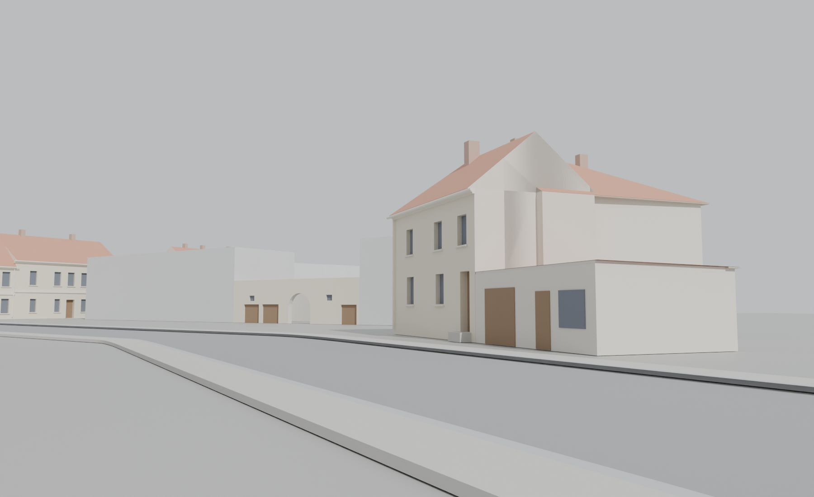
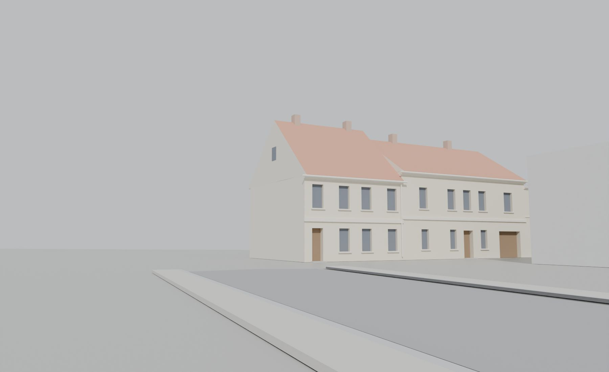
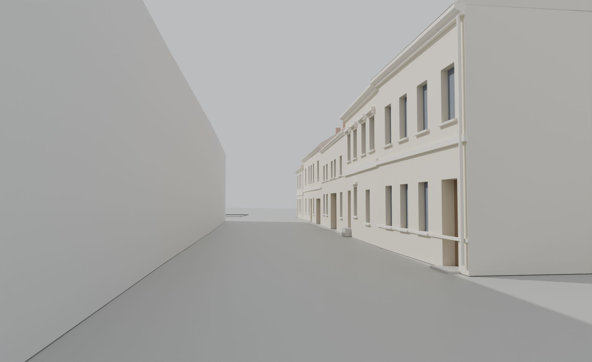
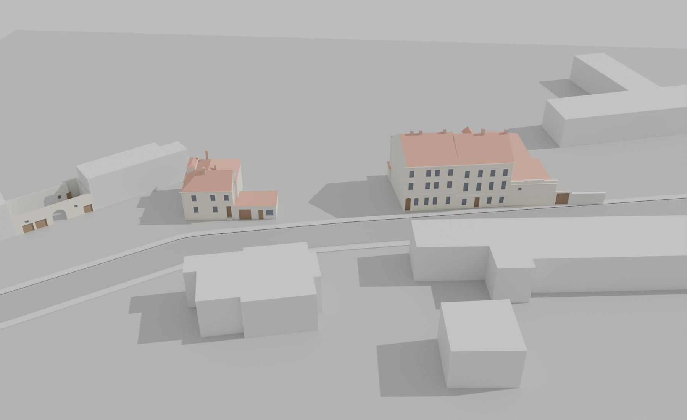
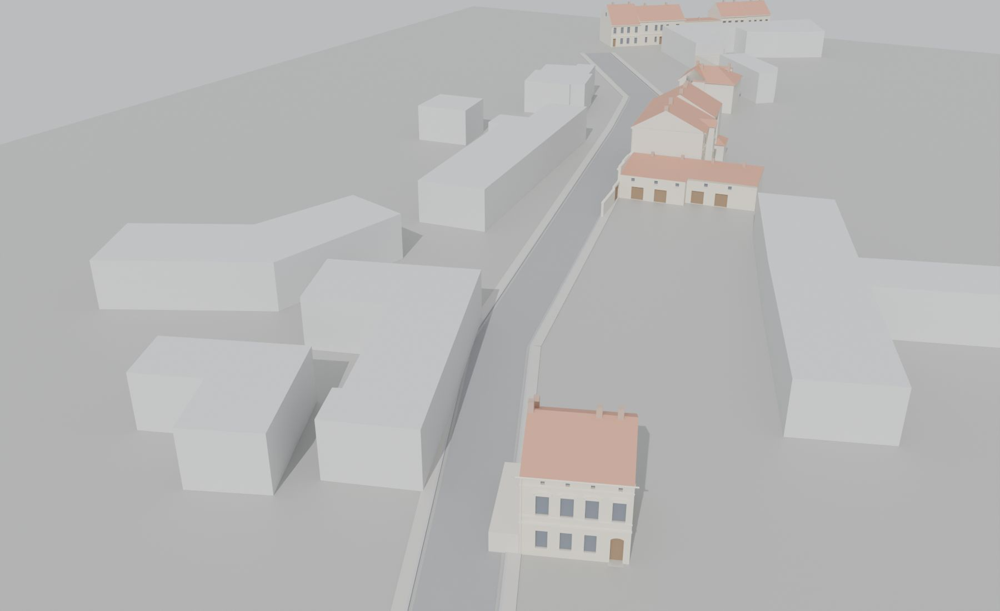
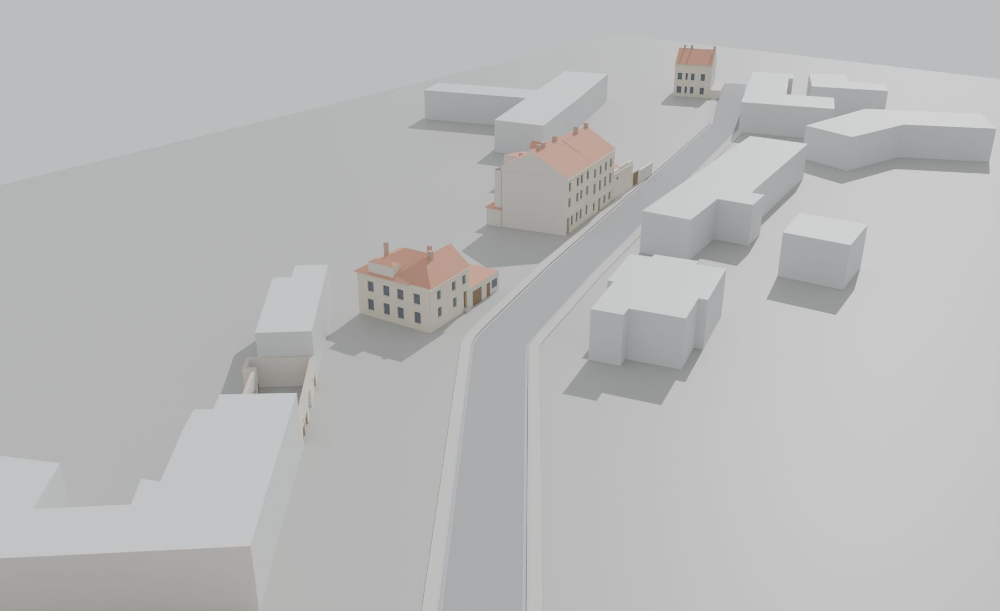
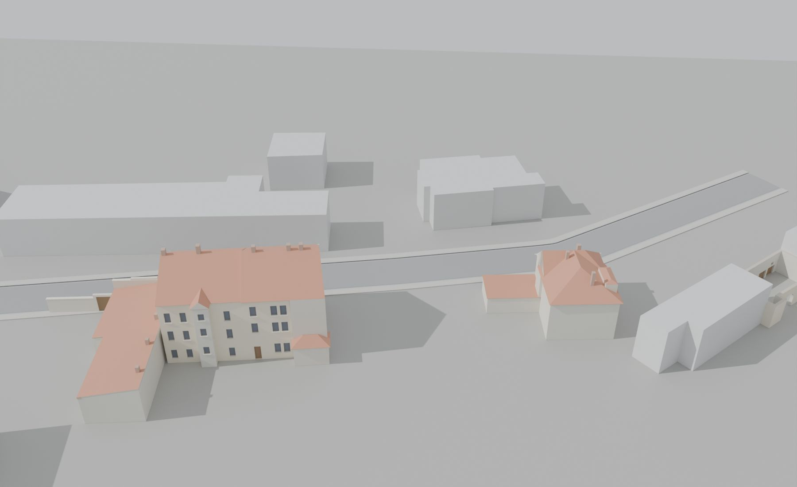
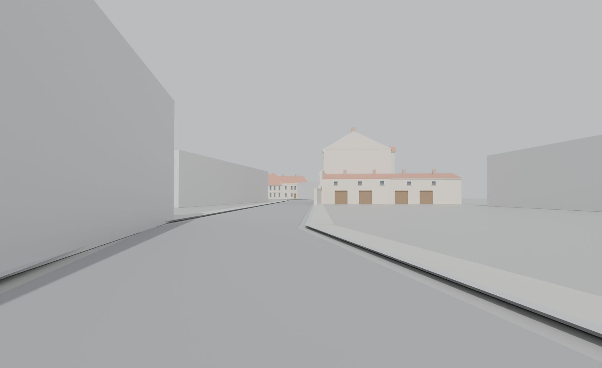
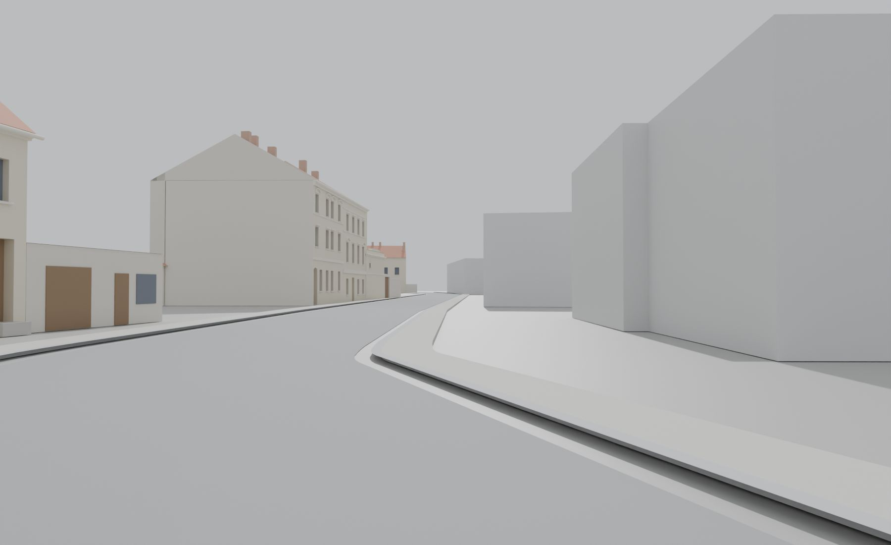
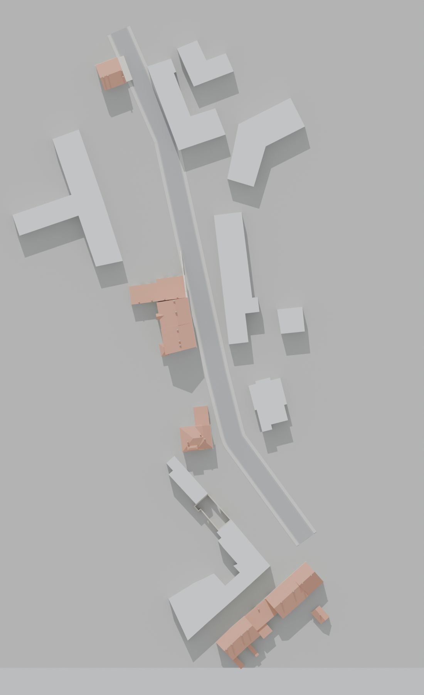
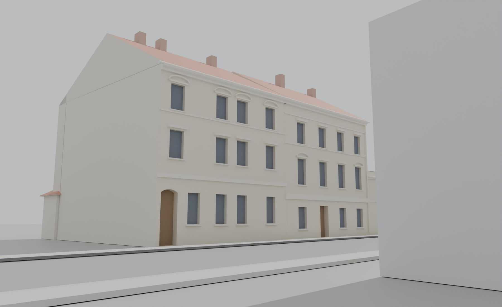